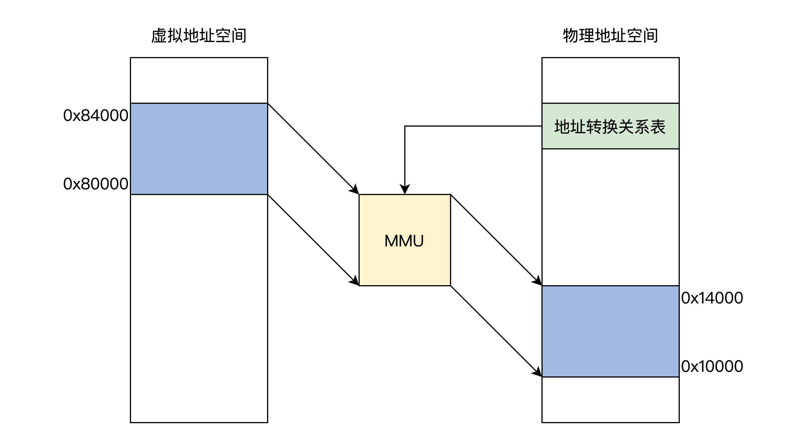
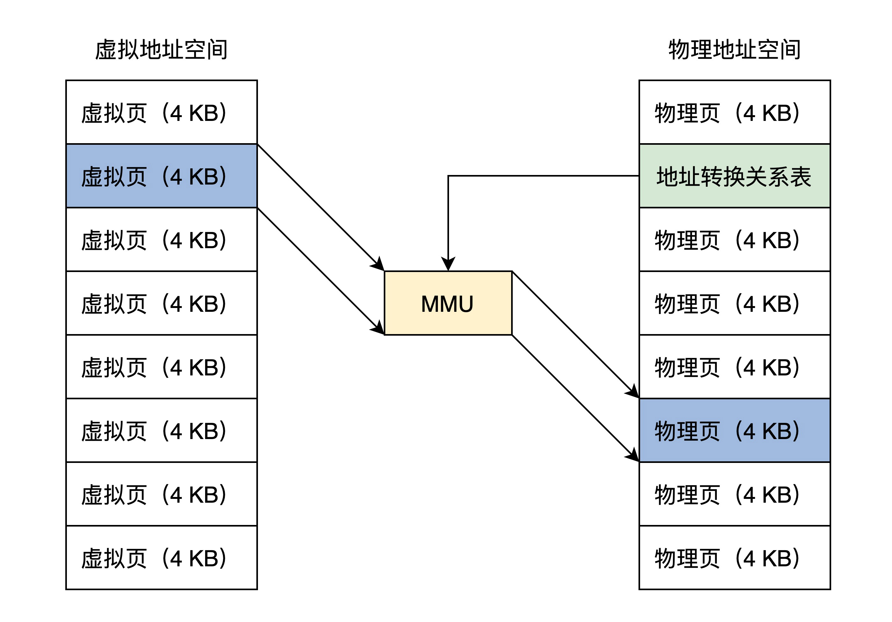
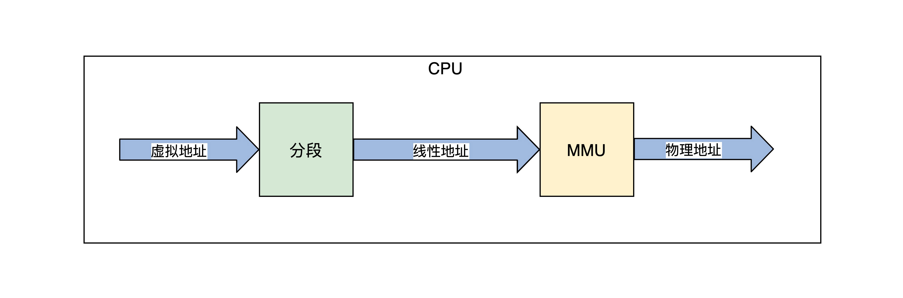

- 00 开篇词 为什么要学写一个操作系统？.md.html
- 00 编辑手记 升级认知，迭代自己的操作系统.md.html
- 01 程序的运行过程：从代码到机器运行.md.html
- 02 几行汇编几行C：实现一个最简单的内核.md.html
- 03 黑盒之中有什么：内核结构与设计.md.html
- 04 震撼的Linux全景图：业界成熟的内核架构长什么样？.md.html
- 05 CPU工作模式：执行程序的三种模式.md.html
- 06 虚幻与真实：程序中的地址如何转换？.md.html
- 07 Cache与内存：程序放在哪儿？.md.html
- 08 锁：并发操作中，解决数据同步的四种方法.md.html
- 09 瞧一瞧Linux：Linux的自旋锁和信号量如何实现？.md.html
- 10 设置工作模式与环境（上）：建立计算机.md.html
- 11 设置工作模式与环境（中）：建造二级引导器.md.html
- 12 设置工作模式与环境（下）：探查和收集信息.md.html
- 13 第一个C函数：如何实现板级初始化？.md.html
- 14 Linux初始化（上）：GRUB与vmlinuz的结构.md.html
- 15 Linux初始化（下）：从_start到第一个进程.md.html
- 16 划分土地（上）：如何划分与组织内存？.md.html
- 17 划分土地（中）：如何实现内存页面初始化？.md.html
- 18 划分土地（下）：如何实现内存页的分配与释放？.md.html
- 19 土地不能浪费：如何管理内存对象？.md.html
- 20 土地需求扩大与保障：如何表示虚拟内存？.md.html
- 21 土地需求扩大与保障：如何分配和释放虚拟内存？.md.html
- 22 瞧一瞧Linux：伙伴系统如何分配内存？.md.html
- 23 瞧一瞧Linux：SLAB如何分配内存？.md.html
- 24 活动的描述：到底什么是进程？.md.html
- 25 多个活动要安排（上）：多进程如何调度？.md.html
- 26 多个活动要安排（下）：如何实现进程的等待与唤醒机制？.md.html
- 27 瞧一瞧Linux：Linux如何实现进程与进程调度_.md.html
- 28 部门分类：如何表示设备类型与设备驱动？.md.html
- 29 部门建立：如何在内核中注册设备？.md.html
- 30 部门响应：设备如何处理内核I_O包？.md.html
- 31 瞧一瞧Linux：如何获取所有设备信息？.md.html
- 32 仓库结构：如何组织文件_.md.html
- 33 仓库划分：文件系统的格式化操作.md.html
- 34 仓库管理：如何实现文件的六大基本操作？.md.html
- 35 瞧一瞧Linux：虚拟文件系统如何管理文件？.md.html
- 36 从URL到网卡：如何全局观察网络数据流动？.md.html
- 37 从内核到应用：网络数据在内核中如何流转.md.html
- 38 从单排到团战：详解操作系统的宏观网络架构.md.html
- 39 瞧一瞧Linux：详解socket实现与网络编程接口.md.html
- 40 瞧一瞧Linux：详解socket的接口实现.md.html
- 41 服务接口：如何搭建沟通桥梁？.md.html
- 42 瞧一瞧Linux：如何实现系统API？.md.html
- 43 虚拟机内核：KVM是什么？.md.html
- 44 容器：如何理解容器的实现机制？.md.html
- 45 ARM新宠：苹果的M1芯片因何而快？.md.html
- 46 AArch64体系：ARM最新编程架构模型剖析.md.html
- LMOS来信：第二季课程带你“手撕”计算机基础.md.html
- 大咖助场 以无法为有法，以无限为有限.md.html
- 用户故事 yiyang：我的上机实验“爬坑指南”.md.html
- 用户故事 成为面向“知识库”的工程师.md.html
- 用户故事 技术人如何做选择，路才越走越宽？.md.html
- 用户故事 操作系统发烧友：看不懂？因为你没动手.md.html
- 用户故事 用好动态调试，助力课程学习.md.html
- 用户故事 艾同学：路虽远，行则将至.md.html
- 结束语 生活可以一地鸡毛，但操作系统却是心中的光.md.html
- 捐赠
06 虚幻与真实：程序中的地址如何转换？
你好，我是LMOS。
从前面的课程我们得知，CPU执行程序、处理数据都要和内存打交道，这个打交道的方式就是内存地址。
读取指令、读写数据都需要首先告诉内存芯片：hi，内存老哥请你把0x10000地址处的数据交给我……hi，内存老哥，我已经计算完成，请让我把结果写回0x200000地址的空间。这些地址存在于代码指令字段后的常数，或者存在于某个寄存器中。
今天，我们就来专门研究一下程序中的地址。说起程序中的地址，不知道你是否好奇过，为啥系统设计者要引入虚拟地址呢？
我会先带你从一个多程序并发的场景热身，一起思考这会导致哪些问题，为什么能用虚拟地址解决这些问题。
搞懂原理之后，我还会带你一起探索虚拟地址和物理地址的关系和转换机制。在后面的课里，你会发现，我们最宝贵的内存资源正是通过这些机制来管理的。
从一个多程序并发的场景说起
设想一下，如果一台计算机的内存中只运行一个程序A，这种方式正好用前面CPU的实模式来运行，因为程序A的地址在链接时就可以确定，例如从内存地址0x8000开始，每次运行程序A都装入内存0x8000地址处开始运行，没有其它程序干扰。
现在改变一下，内存中又放一道程序B，程序A和程序B各自运行一秒钟，如此循环，直到其中之一结束。这个新场景下就会产生一些问题，当然这里我们只关心内存相关的这几个核心问题。
1.谁来保证程序A跟程序B 没有内存地址的冲突？换句话说，就是程序A、B各自放在什么内存地址，这个问题是由A、B程序协商，还是由操作系统决定。
2.怎样保证程序A跟程序B 不会互相读写各自的内存空间？这个问题相对简单，用保护模式就能解决。
3.如何解决内存容量问题？程序A和程序B，在不断开发迭代中程序代码占用的空间会越来越大，导致内存装不下。
4.还要考虑一个扩展后的复杂情况，如果不只程序A、B，还可能有程序C、D、E、F、G……它们分别由不同的公司开发，而每台计算机的内存容量不同。这时候，又对我们的内存方案有怎样的影响呢？
要想完美地解决以上最核心的4个问题，一个较好的方案是：让所有的程序都各自享有一个从0开始到最大地址的空间，这个地址空间是独立的，是该程序私有的，其它程序既看不到，也不能访问该地址空间，这个地址空间和其它程序无关，和具体的计算机也无关。
事实上，计算机科学家们早就这么做了，这个方案就是虚拟地址，下面我们就来看看它。
虚拟地址
正如其名，这个地址是虚拟的，自然而然地和具体环境进行了解耦，这个环境包括系统软件环境和硬件环境。
虚拟地址是逻辑上存在的一个数据值，比如0~100就有101个整数值，这个0~100的区间就可以说是一个虚拟地址空间，该虚拟地址空间有101个地址。
我们再来看看最开始Hello World的例子，我们用objdump工具反汇编一下Hello World二进制文件，就会得到如下的代码片段：
00000000000004e8 <_init>:
4e8: 48 83 ec 08 sub $0x8,%rsp
4ec: 48 8b 05 f5 0a 20 00 mov 0x200af5(%rip),%rax # 200fe8 <__gmon_start__>
4f3: 48 85 c0 test %rax,%rax
4f6: 74 02 je 4fa <_init+0x12>
4f8: ff d0 callq *%rax
4fa: 48 83 c4 08 add $0x8,%rsp
4fe: c3 retq
上述代码中，左边第一列数据就是虚拟地址，第三列中是程序指令，如：“mov 0x200af5(%rip),%rax，je 4fa，callq *%rax”指令中的数据都是虚拟地址。
事实上，所有的应用程序开始的部分都是这样的。这正是因为每个应用程序的虚拟地址空间都是相同且独立的。
那么这个地址是由谁产生的呢？
答案是链接器，其实我们开发软件经过编译步骤后，就需要链接成可执行文件才可以运行，而链接器的主要工作就是把多个代码模块组装在一起，并解决模块之间的引用，即处理程序代码间的地址引用，形成程序运行的静态内存空间视图。
只不过这个地址是虚拟而统一的，而根据操作系统的不同，这个虚拟地址空间的定义也许不同，应用软件开发人员无需关心，由开发工具链给自动处理了。由于这虚拟地址是独立且统一的，所以各个公司开发的各个应用完全不用担心自己的内存空间被占用和改写。
物理地址
虽然虚拟地址解决了很多问题，但是虚拟地址只是逻辑上存在的地址，无法作用于硬件电路的，程序装进内存中想要执行，就需要和内存打交道，从内存中取得指令和数据。而内存只认一种地址，那就是物理地址。
什么是物理地址呢？物理地址在逻辑上也是一个数据，只不过这个数据会被地址译码器等电子器件变成电子信号，放在地址总线上，地址总线电子信号的各种组合就可以选择到内存的储存单元了。
但是地址总线上的信号（即物理地址），也可以选择到别的设备中的储存单元，如显卡中的显存、I/O设备中的寄存器、网卡上的网络帧缓存器。不过如果不做特别说明，我们说的物理地址就是指选择内存单元的地址。
虚拟地址到物理地址的转换
明白了虚拟地址和物理地址之后，我们发现虚拟地址必须转换成物理地址，这样程序才能正常执行。要转换就必须要转换机构，它相当于一个函数：p=f(v)，输入虚拟地址v，输出物理地址p。
那么要怎么实现这个函数呢？
用软件方式实现太低效，用硬件实现没有灵活性，最终就用了软硬件结合的方式实现，它就是MMU（内存管理单元）。MMU可以接受软件给出的地址对应关系数据，进行地址转换。
我们先来看看逻辑上的MMU工作原理框架图。如下图所示：- 
上图中展示了MMU通过地址关系转换表，将0x80000~0x84000的虚拟地址空间转换成 0x10000~0x14000的物理地址空间，而地址关系转换表本身则是放物理内存中的。
下面我们不妨想一想地址关系转换表的实现.如果在地址关系转换表中，这样来存放：一个虚拟地址对应一个物理地址。
那么问题来了，32位地址空间下，4GB虚拟地址的地址关系转换表就会把整个32位物理地址空间用完，这显然不行。
要是结合前面的保护模式下分段方式呢，地址关系转换表中存放：一个虚拟段基址对应一个物理段基址，这样看似可以，但是因为段长度各不相同，所以依然不可取。
综合刚才的分析，系统设计者最后采用一个折中的方案，即把虚拟地址空间和物理地址空间都分成同等大小的块，也称为页，按照虚拟页和物理页进行转换。根据软件配置不同，这个页的大小可以设置为4KB、2MB、4MB、1GB，这样就进入了现代内存管理模式——分页模型。
下面来看看分页模型框架，如下图所示：

结合图片可以看出，一个虚拟页可以对应到一个物理页，由于页大小一经配置就是固定的，所以在地址关系转换表中，只要存放虚拟页地址对应的物理页地址就行了。
我知道，说到这里，也许你仍然没搞清楚MMU和地址关系转换表的细节，别急，我们现在已经具备了研究它们的基础，下面我们就去探索它们。
MMU
MMU即内存管理单元，是用硬件电路逻辑实现的一个地址转换器件，它负责接受虚拟地址和地址关系转换表，以及输出物理地址。
根据实现方式的不同，MMU可以是独立的芯片，也可以是集成在其它芯片内部的，比如集成在CPU内部，x86、ARM系列的CPU就是将MMU集成在CPU核心中的。
SUN公司的CPU是将独立的MMU芯片卡在总线上的，有一夫当关的架势。下面我们只研究x86 CPU中的MMU。x86 CPU要想开启MMU，就必须先开启保护模式或者长模式，实模式下是不能开启MMU的。
由于保护模式的内存模型是分段模型，它并不适合于MMU的分页模型，所以我们要使用保护模式的平坦模式，这样就绕过了分段模型。这个平坦模型和长模式下忽略段基址和段长度是异曲同工的。地址产生的过程如下所示。

上图中，程序代码中的虚拟地址，经过CPU的分段机制产生了线性地址，平坦模式和长模式下线性地址和虚拟地址是相等的。
如果不开启MMU，在保护模式下可以关闭MMU，这个线性地址就是物理地址。因为长模式下的分段弱化了地址空间的隔离，所以开启MMU是必须要做的，开启MMU才能访问内存地址空间。
MMU页表
现在我们开始研究地址关系转换表，其实它有个更加专业的名字——页表。它描述了虚拟地址到物理地址的转换关系，也可以说是虚拟页到物理页的映射关系，所以称为页表。
为了增加灵活性和节约物理内存空间（因为页表是放在物理内存中的），所以页表中并不存放虚拟地址和物理地址的对应关系，只存放物理页面的地址，MMU以虚拟地址为索引去查表返回物理页面地址，而且页表是分级的，总体分为三个部分：一个顶级页目录，多个中级页目录，最后才是页表，逻辑结构图如下.

从上面可以看出，一个虚拟地址被分成从左至右四个位段。
第一个位段索引顶级页目录中一个项，该项指向一个中级页目录，然后用第二个位段去索引中级页目录中的一个项，该项指向一个页目录，再用第三个位段去索引页目录中的项，该项指向一个物理页地址，最后用第四个位段作该物理页内的偏移去访问物理内存。这就是MMU的工作流程。
保护模式下的分页
前面的内容都是理论上帮助我们了解分页模式原理的，分页模式的灵活性、通用性、安全性，是现代操作系统内存管理的基石，更是事实上的标准内存管理模型，现代商用操作系统都必须以此为基础实现虚拟内存功能模块。
因为我们的主要任务是开发操作系统，而开发操作系统就落实到真实的硬件平台上去的，下面我们就来研究x86 CPU上的分页模式。
首先来看看保护模式下的分页，保护模式下只有32位地址空间，最多4GB-1大小的空间。
根据前面得知32位虚拟地址经过分段机制之后得到线性地址，又因为通常使用平坦模式，所以线性地址和虚拟地址是相同的。
保护模式下的分页大小通常有两种，一种是4KB大小的页，一种是4MB大小的页。分页大小的不同，会导致虚拟地址位段的分隔和页目录的层级不同，但虚拟页和物理页的大小始终是等同的。
保护模式下的分页——4KB页
该分页方式下，32位虚拟地址被分为三个位段：页目录索引、页表索引、页内偏移，只有一级页目录，其中包含1024个条目 ，每个条目指向一个页表，每个页表中有1024个条目。其中一个条目就指向一个物理页，每个物理页4KB。这正好是4GB地址空间。如下图所示。
上图中CR3就是CPU的一个32位的寄存器，MMU就是根据这个寄存器找到页目录的。下面，我们看看当前分页模式下的CR3、页目录项、页表项的格式。

可以看到，页目录项、页表项都是4字节32位，1024个项正好是4KB（一个页），因此它们的地址始终是4KB对齐的，所以低12位才可以另作它用，形成了页面的相关属性，如是否存在、是否可读可写、是用户页还是内核页、是否已写入、是否已访问等。
保护模式下的分页——4MB页
该分页方式下，32位虚拟地址被分为两个位段：页表索引、页内偏移，只有一级页目录，其中包含1024个条目。其中一个条目指向一个物理页，每个物理页4MB，正好为4GB地址空间，如下图所示。
CR3还是32位的寄存器，只不过不再指向顶级页目录了，而是指向一个4KB大小的页表，这个页表依然要4KB地址对齐，其中包含1024个页表项，格式如下图。-

可以发现，4MB大小的页面下，页表项还是4字节32位，但只需要用高10位来保存物理页面的基地址就可以。因为每个物理页面都是4MB，所以低22位始终为0，为了兼容4MB页表项低8位和4KB页表项一样，只不过第7位变成了PS位，且必须为1，而PAT位移到了12位。
长模式下的分页
如果开启了长模式，则必须同时开启分页模式，因为长模式弱化了分段模型，而分段模型也确实有很多不足，不适应现在操作系统和应用软件的发展。
同时，长模式也扩展了CPU的位宽，使得CPU能使用64位的超大内存地址空间。所以，长模式下的虚拟地址必须等于线性地址且为64位。
长模式下的分页大小通常也有两种，4KB大小的页和2MB大小的页。
长模式下的分页——4KB页
该分页方式下，64位虚拟地址被分为6个位段，分别是：保留位段，顶级页目录索引、页目录指针索引、页目录索引、页表索引、页内偏移，顶级页目录、页目录指针、页目录、页表各占有4KB大小，其中各有512个条目，每个条目8字节64位大小，如下图所示。

上面图中CR3已经变成64位的CPU的寄存器，它指向一个顶级页目录，里面的顶级页目项指向页目录指针，依次类推。
需要注意的是，虚拟地址48到63这16位是根据第47位来决定的，47位为1，它们就为1，反之为0，这是因为x86 CPU并没有实现全64位的地址总线，而是只实现了48位，但是CPU的寄存器却是64位的。
这种最高有效位填充的方式，即使后面扩展CPU的地址总线也不会有任何影响，下面我们去看看当前分页模式下的CR3、顶级页目录项、页目录指针项、页目录项、页表项的格式，我画了一张图帮你理解。

由上图可知，长模式下的4KB分页下，由一个顶层目录、二级中间层目录和一层页表组成了64位地址翻译过程。
顶级页目录项指向页目录指针页，页目录指针项指向页目录页，页目录项指向页表页，页表项指向一个4KB大小的物理页，各级页目录项中和页表项中依然存在各种属性位，这在图中已经说明。其中的XD位，可以控制代码页面是否能够运行。
长模式下的分页——2MB页
在这种分页方式下，64位虚拟地址被分为5个位段 ：保留位段、顶级页目录索引、页目录指针索引、页目录索引，页内偏移，顶级页目录、页目录指针、页目录各占有4KB大小，其中各有512个条目，每个条目8字节64位大小。

可以发现，长模式下2MB和4KB分页的区别是，2MB分页下是页目录项直接指向了2MB大小的物理页面，放弃了页表项，然后把虚拟地址的低21位作为页内偏移，21位正好索引2MB大小的地址空间。
下面我们还是要去看看2MB分页模式下的CR3、顶级页目录项、页目录指针项、页目录项的格式，格式如下图。

上图中没有了页表项，取而代之的是，页目录项中直接存放了2MB物理页基地址。由于物理页始终2MB对齐，所以其地址的低21位为0，用于存放页面属性位。
开启MMU
要使用分页模式就必先开启MMU，但是开启MMU的前提是CPU进入保护模式或者长模式，开启CPU这两种模式的方法，我们在前面第五节课已经讲过了，下面我们就来开启MMU，步骤如下：
1.使CPU进入保护模式或者长模式。
2.准备好页表数据，这包含顶级页目录，中间层页目录，页表，假定我们已经编写了代码，在物理内存中生成了这些数据。
3.把顶级页目录的物理内存地址赋值给CR3寄存器。
mov eax, PAGE_TLB_BADR ;页表物理地址
mov cr3, eax
- 设置CPU的CR0的PE位为1，这样就开启了MMU。
;开启 保护模式和分页模式
mov eax, cr0
bts eax, 0 ;CR0.PE =1
bts eax, 31 ;CR0.P = 1
mov cr0, eax
MMU地址转换失败
MMU的主要功能是根据页表数据把虚拟地址转换成物理地址，但有没有可能转换失败？
绝对有可能，例如，页表项中的数据为空，用户程序访问了超级管理者的页面，向只读页面中写入数据。这些都会导致MMU地址转换失败。
MMU地址转换失败了怎么办呢？失败了既不能放行，也不是reset，MMU执行的操作如下。
1.MMU停止转换地址。- 2.MMU把转换失败的虚拟地址写入CPU的CR2寄存器。- 3.MMU触发CPU的14号中断，使CPU停止执行当前指令。- 4.CPU开始执行14号中断的处理代码，代码会检查原因，处理好页表数据返回。- 5.CPU中断返回继续执行MMU地址转换失败时的指令。
这里你只要先明白这个流程就好了，后面课程讲到内存管理的时候我们继续探讨。
重点回顾
又到了课程的尾声，把心情放松下来，我们一起来回顾这节课的重点。
首先，我们从一个场景开始热身，发现多道程序同时运行有很多问题，都是内存相关的问题，内存需要隔离和保护。从而提出了虚拟地址与物理地址分离，让应用程序从实际的物理内存中解耦出来。
虽然虚拟地址是个非常不错的方案，但是虚拟地址必须转换成物理地址，才能在硬件上执行。为了执行这个转换过程，才开发出了MMU（内存管理单元），MMU增加了转换的灵活性，它的实现方式是硬件执行转换过程，但又依赖于软件提供的地址转换表。
最后，我们下落到具体的硬件平台，研究了x86 CPU上的MMU。
x86 CPU上的MMU在其保护模式和长模式下提供4KB、2MB、4MB等页面转换方案，我们详细分析了它们的页表格式。同时，也搞清楚了如何开启MMU，以及MMU地址转换失败后执行的操作。
思考题
在分页模式下，操作系统是如何对应用程序的地址空间进行隔离的？
欢迎你在留言区和我交流互动。如果这节课对你有启发的话，也欢迎你转发给朋友、同事，说不定就能帮他解决疑问。
我是LMOS，我们下节课见！
© 2019 - 2023 Liangliang Lee. Powered by gin and hexo-theme-book.